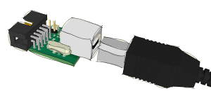

Es scheint kein USB AVR Lab angeschlossen zu sein.
Sollten Sie ein USB AVR Lab angeschlossen haben,
- ist eine Firmware installiert, die sich nicht finden lässt (AVRISPmkII ohne installierten LibUSB-Filter-Treiber oder JTAGICEmkII)
- oder es liegt ein Defekt ihres USB-Ports
- oder des USB AVR Labs vor.